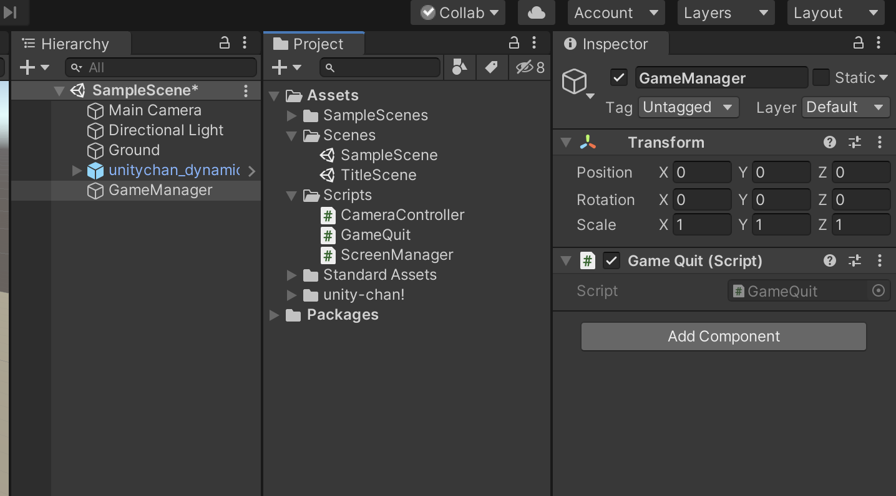

新規シーンの作成と画面遷移
新規シーンの作成
早速新規でシーンを作成したいと思います。
現在のシーンがきちんと保存してあるのを確認してください。

そうすると画面右上の方にユーザーアイコンがあると思うのでそこをクリックして、「Create a Unity ID」を選択します。

そうすると、画面のようなページが開くので、メールアドレス、パスワード、ユーザーネーム、フルネームを記述してください。そしてチェックボックス全てにチェックを入れ「Create a Unity ID」を選択します。
そうすると、登録したメールアドレス宛にUnityから確認のメールが届き、そこに記載されているリンクを開くと登録完了です。
もしくはGoogleアカウント、Facebookアカウントでもログインすることが可能です。任意の方法を選びましょう。
そしてブラウザでUnityのログイン画面が表示されれば無事アカウントの作成は完了です。 先ほど登録したメールアドレスとパスワードを入力してログインしましょう。 Google、Facebookアカウントでログインする場合は右のボタンからログインしてください。
UnityHubのインストール
Unityアカウントの作成が終わったら、インストール作業を行います。

Unityの公式ページの右上にある「はじめる」ボタンをクリックします。
そうするとプランの選択画面になるので、個人で利用する場合は個人向けタブから任意のプランを選択してください。学生以外の方は基本的に「Personal」プランを選択することになると思います。ただしこちらは「収入ならびに資金調達（自己資金含む）の合計が年間10万ドル以下の場合のみ」利用することができます。
その他利用資格についてはプランの欄をご確認ください。

こちらの画面では新規ユーザー向けとリピートユーザー向けのインストーラーが表示されています。 新規ではじめる場合は新規ユーザーを選択するのは普通なのですが、こちらは公式のチュートリアルがついてくるだけで、それ以外は何も変わりません。
こちらの公式チュートリアルはとても分かりやすく作られているのですが、全て英語表記になっていたり、完成されたプロジェクト（サンプルゲーム）が一緒にダウンロードされるので少し時間がかかってしまいます。
こちらのチュートリアルはあとでもダウンロードできるので、今回はリピートユーザーの方からインストールを行いましょう。
利用規約についての画面が表示されるので、同意の部分にチェックを入れて「Download Unity Hub」と書かれたボタンをクリックしましょう。
こちらのUnityHubというものは、Unityのバージョンを管理してくれるデスクトップアプリケーションです。簡単にUnityのバージョンの変更やプロジェクト作成の一括管理ができます。
Unityは頻繁にアップデートを繰り返しており、短い頻度で新しいバージョンのUnityがリリースされています。2019年には60回以上もバージョンの更新があったのですが、アプリケーションの制作途中にUnityをアップデートすると予期せぬエラーで突然動かなくなるということもよく起こってしまいます。
そうならない為に、一度アプリケーションを作り始めたらそのアプリケーションは完成するまで同じバージョンのUnityで作り切るようにしましょう。 しかし、チーム開発やUnityの新しい機能を使いたいとなった場合はUnityのバージョンをアップデートしなければならない状況も生まれてくることがあります。
そのような場合にUnityHubを利用していると、現在のバージョンのUnityを保持しておきながら新しいバージョンのUnityも同時にインストールして使用することができます。
このようにUnityHubにはプロジェクトごと、チームや機能に合わせてUnityのバージョンを切り替えられるというメリットがあるので、ぜひこのUnityHubを有効的に利用してみましょう。
ダウンロードが終わったら、表示に従いセットアップを進めてください。 無事UnityHubが起動されたら成功です。
初期設定
UnityHubを開いたらまずはサインインをします。

UnityHubの右上のユーザーアイコンをクリックし、サインインを選択します。 先ほど登録したメールアドレスとパスワード、もしくはGoogleかFacebookのアカウントでログインをしましょう。

次にライセンス認証を行う必要があります。

License managementで、PlusまたはProを利用の場合は、Unity Plus or Proの下の「Enter your serial number」の欄に購入したライセンスのシリアル番号を入力してください。Personalを利用する場合はそちらを選択して画面右下の「実行」ボタンをクリックしてください。
この後に簡単なアンケートのようなものが表示された場合は、内容に沿って回答していきましょう。英語表記で少し分かりづらいかもしれませんが間違った回答をしても特に問題はありません。
Thank youの画面に切り替わったら画面右下の「Install Now」をクリックしましょう。 そして「Setup Unity to begin creating」の画面になったら画面中央の「Download」ボタンをクリックします
Unityのインストール
そうするとUnityのインストール画面が出てくるのでここでイントールするUnityのバージョンを選択します。
UnityHubはいくつものUnityをバージョン別に保持できるので、ここで間違ったバージョンのUnityをダウンロードしても問題ありません。
UnityのバージョンのおすすめはUnityのバージョン表記の右側に「LTS」の表示があるバージョンです。 LTSとはロングタームサポートの略で、長期間このバージョンのUnityをサポート・メンテナンスしますという意味になっています。
特にどのバージョンでなければいけないということがなければこのLTSの表示があるバージョンの中で一番新しいものを選択してください。
もし新しい機能も試してみたいというものがあれば一番上の最新バージョンもダウンロードしてみてもいいかもしれません。

「Add components to your install」の画面でチェックボックスをクリックしてチェックをつけたコンポーネントがインストールされます。
VisualStudioがインストールされていない場合にはDev toolsでMicrosoft Visual Stuido Communityに必ずチェックをつけてください。
Platformsでは開発対象のプラットフォームを選択します。こちらは後からでも追加することができるので初回は必要最低限のプラットフォームを選択しておきましょう。
今回はWebGLとAndroidBuildSupportにチェックをつけてNextをクリックしてください。
また、Unityの各種表示を日本語にしたい場合はリストの下の方にあるLanguage packsの中から日本語にチェックをつけても構いません。ただし日本語表示にすると、ウェブ上にある様々なUnityの記事の表記と異なり分かりにくくなるという問題もあるので気をつけましょう。
初めてVisualStudioをインストールする場合はライセンスに同意する必要があります。
しばらく待っているとインストールが完了します。